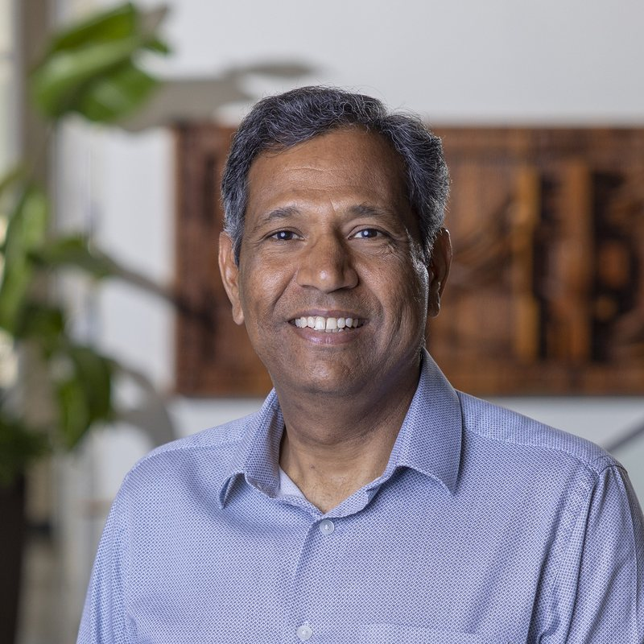

Manish Dixit, Ph.D., LEED AP
Manish Dixit is the Director of the ENSURE Lab and a Professor and Clark Construction Group Endowed Professor in the Department of Construction Science at Texas A&M University. He has more than a decade of professional experience in the building design and construction industry, with a primary focus on commercial construction.
His research interests encompass life-cycle energy and environmental modeling, facilities management, virtual and augmented reality, embodied energy assessment, additive manufacturing in construction, Building Information Modeling, and spatial cognition in altered or extreme environments.
The U.S. Department of Energy endorsed his nomination as the National Expert for IEA Annex 57 and Annex 72, two prominent multinational collaborative research projects that have substantially advanced global efforts to standardize life-cycle energy modeling for buildings.
His research has been funded by the National Science Foundation, NASA, the U.S. Department of Energy, the New Frontiers in Research Fund, and Vanitec.